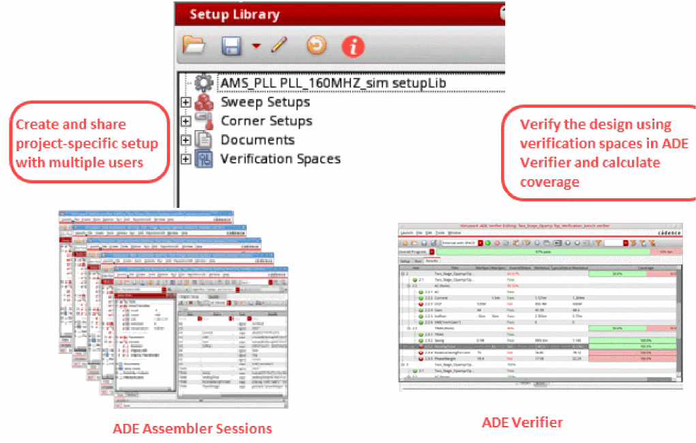
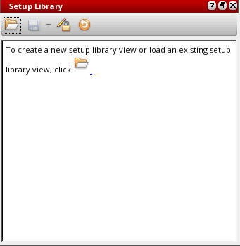
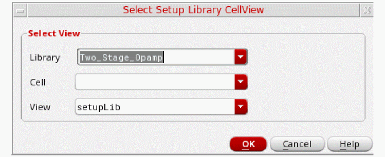
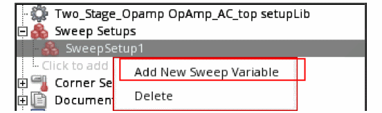
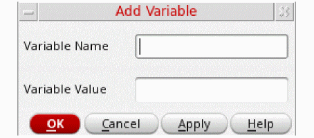
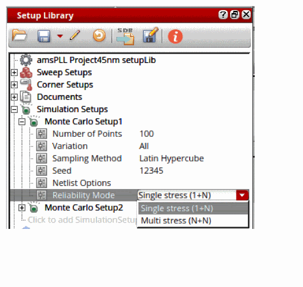
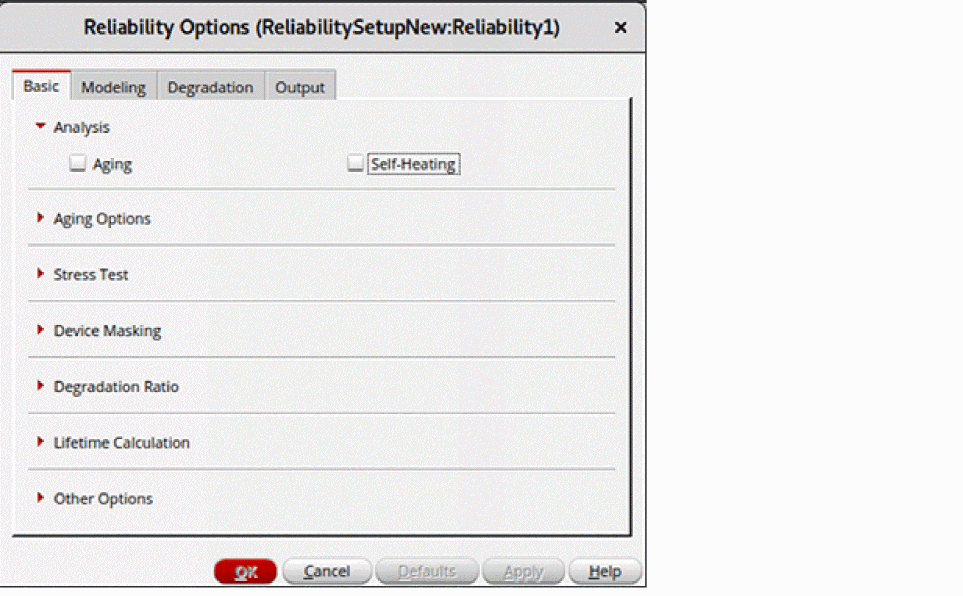
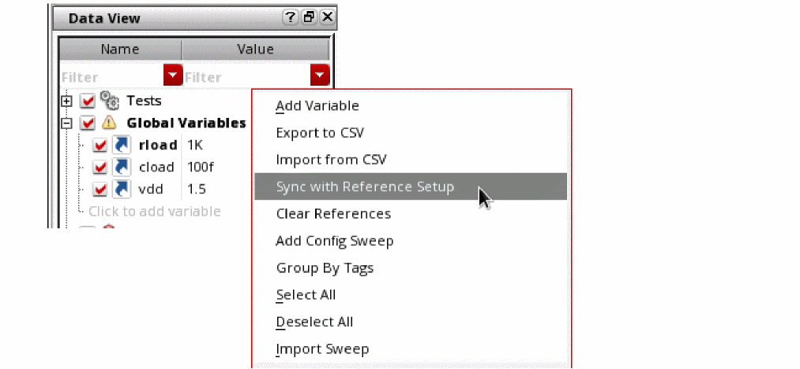
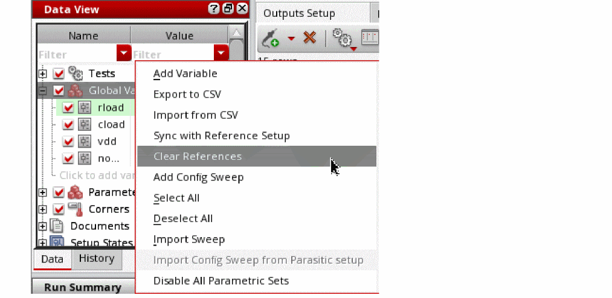
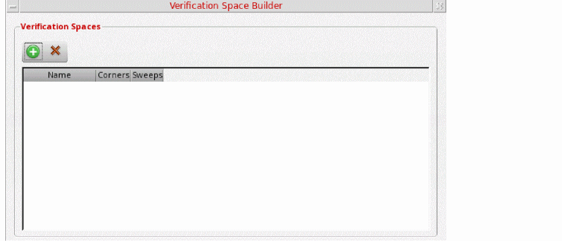

15
Working with the Setup Library Assistant
The Setup Library assistant helps you define a project-specific (master) setup for the design blocks in ADE Assembler and then reuse the specified setup to create or modify the current simulation setup in the Data View assistant. The setup in this assistant is generic and can be applied on any design. The Setup Library assistant can be accessed using ADE Assembler and ADE Verifier.
Following are the main tasks that you can perform using this assistant:
- Specify a master project-specific setup, which includes sweep variables, corners, model files, and so on.
-
Save the specified setup in a cellview independent of the
maestroview, and thus can be conveniently shared with designers working on different blocks. - Create a verification space. You can use the verification spaces to calculate the coverage percentage in ADE Verifier.
The scope and capabilities of this assistant are defined based on your work requirements and the platforms you are working on:
- If you work at the design level (block-level) for analog designing, then you can open this assistant in ADE Assembler to reuse the specified setup to create the setup in the Data View assistant.
-
If you work on the top-level design verification (managing the overall project), then you can open this assistant in ADE Verifier to create verification spaces and ensure full coverage of the analog design blocks.
In ADE Verifier, you can open the Setup Library assistant, load a predefined Setup Library cellview, create verification spaces, and then assign these spaces to different blocks. You can then calculate the coverage percentage and generate a coverage report to check whether the specified setup values in verification spaces are run or not.
To know more about how this assistant works in Virtuoso ADE Verifier, see the Verifying the Design Against the Specified Setup chapter in Virtuoso ADE Verifier User Guide.

This chapter includes the following topics:
- Opening the Setup Library Assistant
- Setup Library Assistant Graphical User Interface
- Creating a New Cellview or Loading an Existing Cellview
- Editing the Setup
- Reusing the Setup from Data View and Setup Library Assistants
- Synchronizing ADE Assembler Setup with Changes in Setup Library
- Creating Verification Spaces
- Managing Documents
Related Blog on Cadence Community
Opening the Setup Library Assistant
Perform one of the following steps to open the Setup Library assistant in ADE Assembler:
-
Click Open Setup Library on the toolbar.
Alternatively, choose Windows – Assistants – Setup Library. -
Right-click anywhere on the menu bar and choose Assistants – Setup Library.
The Setup Library assistant appears on the right of the ADE Assembler window, as shown in the figure below:

By default, when you open the Setup library assistant for the first time, no setup cellview is loaded in the assistant and the assistant is blank. You can create a new Setup Library cellview or open an existing Setup Library cellview, depending on the type of work you need to perform using this assistant.
Setup Library Assistant Graphical User Interface
The Setup Library assistant includes a toolbar and the interface for defining and displaying the setup elements. The figure below explains the graphical user interface of this assistant:
Toolbar
Creating a New Cellview or Loading an Existing Cellview
When you open the Setup Library assistant for the first time, it does not show any data and an information message is displayed that guides you to open a new or an existing Setup Library cellview. You can create a new Setup Library cellview and specify the project-specific setup, or you can open an existing cellview if you want to run or edit the project-specific setup.
To create a new cellview or open an existing view:
-
Click the folder icon (
) on the toolbar or in the text displayed in the assistant.
The Select Setup Library CellView form appears, as shown in the figure below:

In this form, specify the following fields:
- In the Library and Cell drop-down lists, select a library and the corresponding cell.
-
In the View drop-down list, all the existing cellviews of type
setupLibare displayed. Specify a cellview name for the Setup Library view if you want to create a new cellview. By default, the cellview type is displayed assetupLibwhen you open the form. If you want to load an existing cellview, select the cellview name from the drop-down list. - Click OK.
The specified Setup Library cellview is created or loaded in the Setup Library assistant.
The new Setup Library cellview you create is saved and displayed in the View section of Library Manager. For example, if you create a new cellview SetupLib for library Two_Stage_Opamp and cell OpAmp_AC_top, this cellview is displayed in the Library Manager window, as shown in the figure below:
Editing the Setup
When a new Setup Library cellview is created, it does not include any setup elements. You need to edit the setup to add elements to that cellview. You might also want to modify the an existing setup to add, delete, or modify elements.
This section includes the following topics:
Adding New Sweep Setups
To add a new sweep setup, do one of the following:
- Right-click Sweep Setups and choose Create Sweep Setup.
-
Expand the Sweep Setups tree and click the
Click to add SweepSetuptext.
The sweep setup has been added and displayed in the tree. The default sweep setup name isSweepSetup1. You can also rename it if you want.
Now, to add a sweep variable in this sweep setup:
-
Right-click the sweep setup name, such as
SweepSetup1, and choose Add New Sweep Variable.
The Add Variable form appears in which you can specify the sweep variable name and value.

The specified variable is listed in SweepSetup1 tree in a new row, as shown below:
Similarly, you can add more variables to this sweep setup and create more sweep setups. The second sweep setup you create is by default named as SweepSetup2.
Alternatively, you can drag the variables from the Data View assistant and add them to the specific sweep setups in the Setup Library assistant. Use the Ctrl key to drag multiple variables together.
To delete a sweep variable, right-click the variable and choose Delete.
To delete the entire sweep setup, right-click the sweep setup tree and choose Delete.
To view all the sweep variables in a sweep setup, right-click the sweep setup tree and choose Expand All.
To hide all the sweep variables in a sweep setup, right-click the sweep setup tree and choose Collapse All.
Adding New Corner Setups
To add a new corner setup, do one of the following:
- Right-click Corner Setups and choose Create Corner Setup.
-
Expand the Corner Setups tree and click the
Click to add CornerSetuptext.
The corner setup has been added and displayed in the tree. The default corner setup name isCornerSetup1. You can also rename it if you want.
To add a corner to the corner setup:
- Add a new corner in the ADE Assembler setup or select the already specified corners in the ADE Assembler setup.
-
Drag the corner from the Data View assistant to the corner setup in Setup Library assistant.
The corner is added in the specified corner setup in the Setup Library assistant.
Adding New Simulation Setups
To add a new simulation setup, do one of the following:
- Right-click Simulation Setups and choose Create New Monte Carlo Setup.
-
Expand the Simulation Setups tree and click the
Click to add SimulationSetuptext.
The Monte Carlo simulation setup is added and displayed in the Simulation Setups section. The default name of the new simulation setup isMonte Carlo Setup1, and it contains the variablesmcnumpoints,mcmethods,samplingmode, andmontecarloseed. You can double-click the setup name and rename it.

To add a variable value in this simulation setup, specify the following:
-
In the
mcnumpointsvariable row, double-click to make the text field editable and specify the number of points for which you want to run the Monte Carlo simulation. -
From the
mcmethodsdrop-down list, select method that you want to use for running Monte Carlo simulations. Possible values are All, Mismatch, and Process. -
From the
samplingmodedrop-down list, select the mode that you want to use to run Monte Carlo simulations. Possible values are Random, Latin Hypercube, and Low-Discrepancy Sequence. -
In the
montecarloseedvariable row, double-click to make the text field editable and specify the seed value for which you want to run the Monte Carlo simulation.
The specified variable values are listed in the Monte Carlo Setup1 group. You can double-click the displayed variable value to change it directly in the variable row.
You can add more simulation setups in your setup library view. The second simulation setup that you create is by default named Monte Carlo Setup2, and so on.
Additionally, you can drag the simulation setup from the Setup Library assistant and drop it on the Data View assistant. Use the Ctrl key to drag multiple setups together.
When you drag and drop a Monte Carlo simulation setup from the Setup Library assistant to the Data View assistant, ADE Assembler shows the run options in the Monte Carlo options form. The form shows the values that you have specified in Monte Carlo Setup1.
To delete a specific simulation setup from the Setup Library assistant, right-click the setup name and choose Delete.
To view all the variables in a simulation setup, right-click the simulation setup name and choose Expand All.
To hide all the variables in a simulation setup, right-click the simulation setup name and choose Collapse All.
Adding New Reliability Setups
To add a new reliability setup, ensure that the setup library cellview is editable and do one of the following:
- Right-click Reliability Setups and choose Create New Reliability Setup.
-
Expand the Reliability Setups node and click the
Click to add Reliability Setuptext.
The reliability setup is added and displayed in the Reliability Setups section. The default name of the new reliability setup is ReliabilitySetup1, which you can rename as required. The second reliability setup that you create is by default named ReliabilitySetup2, and so on.
Ensure that the reliability setup name is a non-empty string which is not '.' or '..' and does not contain whitespaces or the characters: '~\\*/<>'?|\"()=;&$'."
To add reliability options to a reliability setup in the setup library cellview:
The default name of the first set of reliability options is Reliability1. You can add more reliability options in your reliability setup.
Alternatively, you can drag the top element of reliability analyses together with one or more reliability options from Data View in ADE Assembler and drop them to any reliability setup or reliability options node in the setup library cellview.
If the Reliability Setups group contains multiple reliability options, you can enable the required options and disable the others.
To enable or disable a set of reliability options, do one of the following:
- Right-click the required reliability options node and select Enable to enable the reliability options. Alternatively, select the check box for this set of reliability options.
- Right-click the required reliability options node and select Disable to disable the reliability options. Alternatively, deselect the check box for this set of reliability options.
The Enable and Disable commands are available for multiple selection when the setup library cellview is editable.
To edit the reliability options in a reliability setup:
-
Right-click the reliability options node and select Edit Reliablity Options.
The Edit Reliability Options command is only available when the setup library cellview is editable.

The Reliability Options form is displayed.
This form is the same as the Reliability Options form that is opened from the Data View in ADE Assembler. The form name is suffixed with the names of the reliability setup and reliability options in the following format.
Reliability Setup_name:ReliabilityOptions_name
All options in this form are set to the default values that are read from the spectre/.cdsenv file. You can modify the values, if required.
To view the reliability options in the read-only mode:
-
Right-click the reliability setup name and choose View Reliability Options.
This command is available only when the setup library view is in read-only mode. It is not available when you select multiple reliability options.
The Reliability Options form is displayed in view-only mode. The OK, Defaults, and Apply buttons are disabled. This means that even if you modify any values in the form, the settings are not saved in the reliability setup.
All changes that you make to a reliability setup are indicated by a yellow exclamation mark on the Refresh Current Setup Library with latest changes button on the Setup Library toolbar.
You can also drag one or more reliability options from the Setup Library to the Data View. Some important points to be noted during this process are as follows:
- All reliability options related to devices are ignored
- All test names are set to the first enabled test. You can modify the test name using the Reliability Analysis Editor.
To delete a specific reliability setup from the Setup Library assistant:
To view all the reliability options in a reliability setup:
To hide all the reliability options in a reliability setup:
Reusing the Setup from Data View and Setup Library Assistants
You can load the setup defined in the Setup Library assistant into the Data View assistant and then create your ADE Assembler setup using the specified variables and corners values required for the project.
To do this, you can drag the setup elements from the Setup Library assistant to the Data View assistant. You can drag either a particular sweep or corner value or the entire sweep or corner setups. To drag multiple setup elements, use the Ctrl key.
If you drag one or multiple sweep variables or corners together from the Setup Library assistant to Data View, then the variables or corners are added in Data View as a copy. However, if you drag the whole sweep or corner setup, the elements in the dragged setup are displayed with a reference icon. This indicates that the elements are referenced from the Setup Library assistant.
In the case of corners, when you set the nil, the corner in the Data View assistant can have additional variables, parameters, model files, or model groups, in addition to the settings from the referenced corner setup in the Setup Library Assistant.
If the t, the setup dragged from the Setup Library assistant is added as a tag for the variable or corner in the Data View assistant.
Modifications of these referenced elements in either of these assistants are highlighted in the Data View assistant. Consider that the value of a variable, vdd, in the Setup Library assistant, is set to 1.5, and this variable is also present in the Data View assistant as a reference. Now, if you change the value of vdd to 1.2 in the Setup Library assistant, or if you change the value of vdd to 2 in the Data View assistant, the Data View assistant displays the variable name in bold text.
Additionally, an exclamation mark icon is also displayed with the Global Variables section, indicating that the variables are not in sync with the Setup Library. When you move your mouse over the section name, a tooltip is displayed to specify the reason for the difference. When you hover the pointer on sweeps and corners in Data View, a tooltip appears to display the name of the referenced setup from Setup Library.

If you want to run simulations for a specific set of sweep combinations for different parameters. you can create a parametric setup in the Setup Library assistant and drag it to the Global Variables section in the Data View assistant. To do this, select one of the following:
- Select only the variables in the parametric set and drag them to the Data View assistant. This is useful when you only want to add the parametric set, but the sweep setup has other variables, in addition to the parametric set.
-
Select the sweep setup and drag it to the Global Variables section in the Data View assistant. This is useful when all variables in the sweep setup are grouped as a parametric set, or if you want to add the parametric set as well as all other variables from the sweep setup.
All variables in the dragged setup are displayed with a reference icon and the variables in the parametric setup are displayed with a highlighted background. If a difference exists in the parametric sets between Global Variables in the Data View and referenced sweep setups in the Setup Library assistant, the Global Variables section and the variable name with the difference is displayed in bold text with an exclamation icon. Additionally, a tooltip displays the differences.
Consider a scenario where the Data View and the Setup Library both contain multiple parametric setups, as shown below. Here, each parametric set is highlighted in a different shade of color.
Now, if you drag SweepSetup1 and SweepSetup2 from the Setup Library to the Data View, the setup from the Setup Library takes priority and overwrites the variables and parametric sets in the Global Variables section. The Data View assistant retains a parametric set in the Global Variables section if it contains variables that are not present in the Setup Library. It can be observed that all parametric sets are redefined as follows:
You can change the dragged values in Data View assistant; however, it is considered a deviation from the project-specific setup and is not recommended.
You can also drag the setup elements and parametric sets from the Data View assistant to load them into the Setup Library assistant. Here, the parametric setup is displayed with a highlighted background. You can drag one variable or corner at a time or the entire setup in one step. To load multiple setup elements, such as multiple sweeps or corners together, select them using the Ctrl key and then drag them.
Similarly, you can also drag one or more reliability options from the Setup Library to the Data View. Some important points to be noted during this process are as follows:
- All reliability options related to devices are ignored
- All test names are set to the first enabled test. You can modify the test name using the Reliability Analysis Editor.
- The reliability options in the Data View assistant are overwritten if the name of the reliability options in Data View is the same as the options in the setup library cellview. However, no changes are made to the original test name and the reliability options related to device.
- A reference icon is displayed on the Data View elements in the reliability setup when you drag the reliability setup from the Setup Library to the Data View. This indicates that the elements are referenced from the Setup Library assistant.
- The name of the Reliability Analyses group and all out-of-sync items in the reliability setup of the Data View assistant are displayed in bold.
Synchronizing ADE Assembler Setup with Changes in Setup Library
If the sweep or corner setup and reliability setup that you reused from the Setup Library assistant is updated in the project-specific setup in Setup Library, the Data View assistant displays the Global Variables section name and variable name, and the Reliability Analyses and reliability elements in bold text.
The tooltip also shows a message indicating that the values in the referenced setup have changed, and shows the revised values, as shown below.
You can synchronize the ADE Assembler setup to reflect the latest updates. To do this:
-
Right-click the Global Variables, Corners, or Reliability Analyses section and choose Sync with Reference Setup.

The exclamation mark icon on the Global Variables and Reliability Analyses sections and the bold text disappear and the Data View assistant reflects the updated values from the referenced setup.
Clearing References to Setups in the Setup Library
There can be scenarios when you want to remove any references to the sweep, corner, or reliability setup to meet the following requirements:
- You want to modify the values in the Data View assistant independent of the Setup Library
- Any changes in setup library do not overwrite the values in Data View assistant
In such cases, you can clear all references to the sweep setups or corners setups.
-
In the Data View assistant, right-click Global Variables or Corners, and choose Clear References.
ADE Assembler clears the references for all the setups. After this, any changes in the setup library are not reflected in the maestro view.
Once the project-specific setup is defined and reused to create the current simulation setup in Data View, and simulation results are obtained, you can verify the simulation history in ADE Verifier. You can create verification spaces and calculate the design coverage to check whether the entire project-specific setup has been run, and then generate the coverage report in the Result tab of ADE Verifier. For more details, refer to Creating Verification Spaces.
Creating Verification Spaces
A verification space is a combination of sweep and corner values that you specify in the Setup Library assistant. You can assign these verification spaces to different design blocks and use them to calculate the coverage.
To create verification spaces, do one of the following:
- Right-click the Verification Spaces tree and choose Create Verification Space.
-
Click the
Click to add Verification Spacetext displayed under the Verification Spaces tree.
The Verification Space Builder form appears, as shown in the figure below:

To add a new verification space:
-
Click Create New Space (
).
A new space row is added and named asSpace1, as shown in the figure below:
You can double-click the space name and rename it if you want. - Select the following, as required:
Similarly, you can create more verification spaces and they are by default named as Space2, Space3, and so on.
To delete a verification space, select the space in the Verification Space Builder form and click Delete ( ).
For more information about how to use the Setup Library assistant to calculate coverage, see the
Managing Documents
The Setup Library assistant includes a Documents section in which you can import a file containing the coverage report for a particular design. For more information about how to export the coverage report into a CSV file, see Exporting the Coverage Report in Virtuoso ADE Verifier User Guide.
Once the coverage report is exported, you can perform the following step to add it into the Documents section of the Setup Library assistant:
The Choose Document to be added form appears in which you can browse and select a document you want to add. The selected file will be added in the Documents section.
You can right-click the filename and choose one of the following options to perform various operations:
- Open—Select this option to open the CSV file.
- Delete—Select this option to delete the CSV file.
- Save As—Select this option to save a copy of the CSV file.
- Refresh—Select this option to refresh the CSV file to show the latest data. This option is available even if no document is added in the Documents section.
Return to top